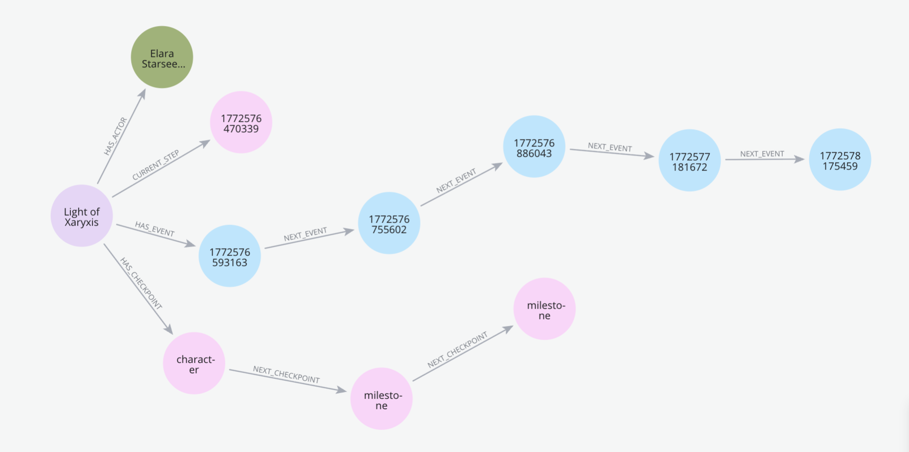
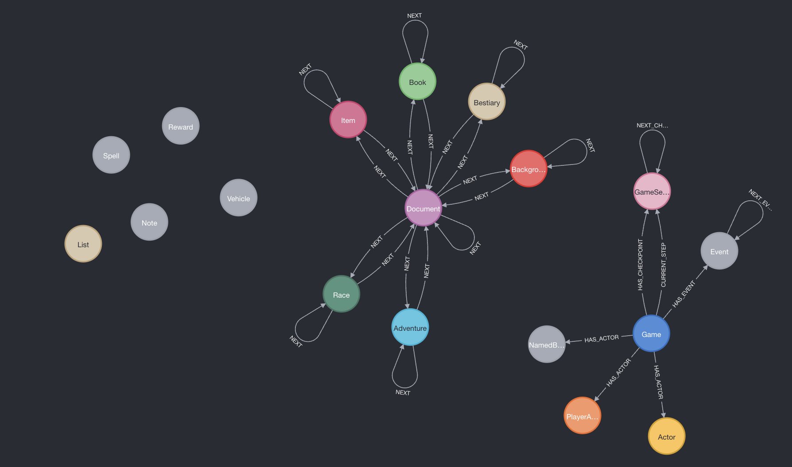
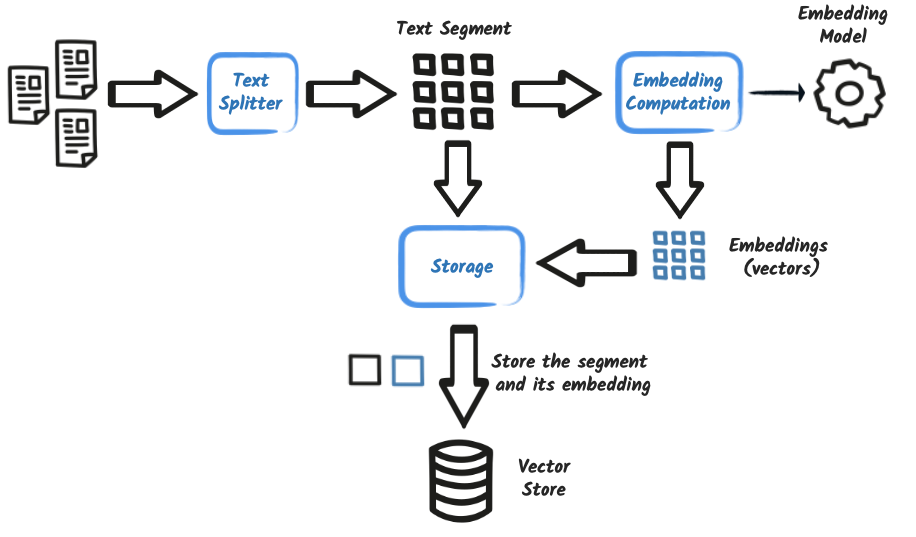
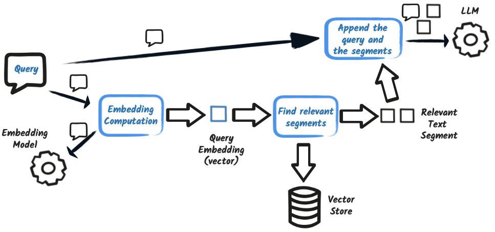
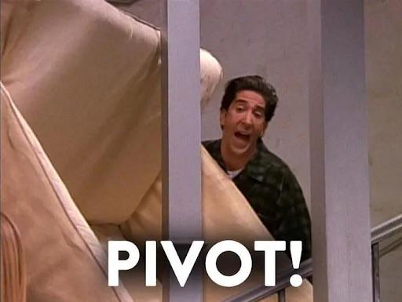
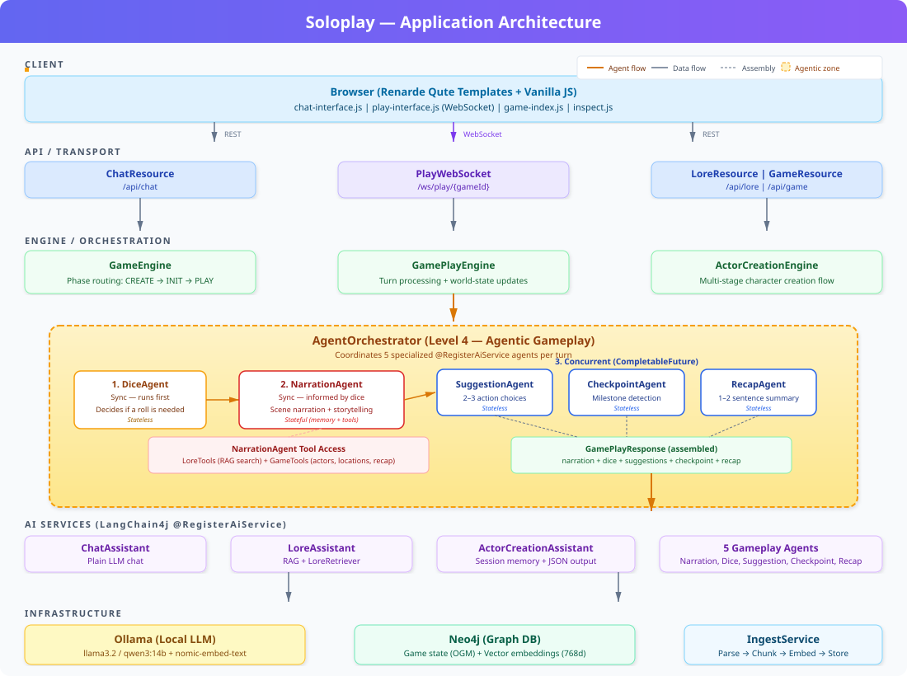
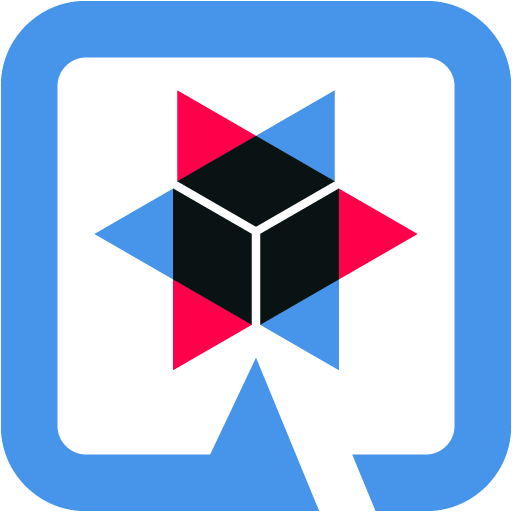

<!DOCTYPE html>
<html lang="en">
<head>
    <meta charset="utf-8" />
    <meta name="viewport" content="width=device-width, initial-scale=1.0, maximum-scale=1.0, user-scalable=no" />

    <title></title>
    <link rel="stylesheet" href="../reveal-5.2.0/dist/reset.css">
    <link rel="stylesheet" href="../reveal-5.2.0/dist/reveal.css" />
    <link rel="stylesheet" href="../reveal-5.2.0/css/slides-extended.css" />
    <link rel="stylesheet" href="assets/css/theme.css" id="theme" />
    <link rel="stylesheet" href="assets/css/github.highlight.css" />
    <link rel="stylesheet" href="../reveal-5.2.0/plugin/customcontrols/style.css">


    <link rel="stylesheet" href="assets/css/base-talk.css" />

    <script defer src="../reveal-5.2.0/dist/fontawesome/all.min.js"></script>

    <script type="text/javascript">
        function pageInIframe() {
            return (window.location !== window.parent.location);
        }

        let forgetPop = true;
        function onPopState(event) {
            if(forgetPop){
                forgetPop = false;
            } else if( pageInIframe()) {
                parent.postMessage(event.target.location.href, "app://obsidian.md");
            }
        }
        window.onpopstate = onPopState;
        window.onmessage = event => {
            if(event.data == "reload"){
                window.document.location.reload();
            }
            forgetPop = true;
        }

        function fitElements() {
            const itemsToFit = document.getElementsByClassName('fitText');
            for (const item in itemsToFit) {
                if (Object.hasOwnProperty.call(itemsToFit, item)) {
                    const element = itemsToFit[item];
                    fitElement(element, 1, 1000);
                    element.classList.remove('fitText');
                }
            }
        }

        function fitElement(element, start, end) {

            let size = (end + start) / 2;
            element.style.fontSize = `${size}px`;

            if (Math.abs(start - end) < 1) {
                while (element.scrollHeight > element.offsetHeight) {
                    size--;
                    element.style.fontSize = `${size}px`;
                }
                return;
            }

            if (element.scrollHeight > element.offsetHeight) {
                fitElement(element, start, size);
            } else {
                fitElement(element, size, end);
            }
        }

        document.onreadystatechange = () => {
            fitElements();
            if (document.readyState === 'complete') {
                if (pageInIframe() && window.location.href.indexOf("?export") != -1){
                    parent.postMessage(event.target.location.href, "app://obsidian.md");
                }
                if (window.location.href.indexOf("print-pdf") != -1){
                    let stateCheck = setInterval(() => {
                        clearInterval(stateCheck);
                        window.print();
                    }, 250);
                }
            }
        };
    </script>
</head>

<body>
    <div class="reveal">
        <div class="slides"><section  data-markdown><script type="text/template"><!-- .slide: class="drop" template="" -->
<div class="" style="position: absolute; left: 0px; top: 0px; height: 700px; width: 960px; min-height: 700px; display: flex; flex-direction: column; align-items: center; justify-content: center" absolute="true">

### Supercharge Your Applications


#### with Java, Graphs, and a Touch of AI

Jennifer Reif and Erin Schnabel
</div></script></section><section  data-markdown><script type="text/template"><!-- .slide: class="drop" template="" -->
<div class="" style="position: absolute; left: 0px; top: 0px; height: 700px; width: 960px; min-height: 700px; display: flex; flex-direction: column; align-items: center; justify-content: center" absolute="true">

### About us

<split even>
<div>

 
Jennifer
<a href="https://jmhreif.com/">jmhreif.com</a>
</div>
<div>

 
Erin  
<a href="https://bsky.app/profile/ebullient.dev">@ebullient.dev</a>
</div>
</split>
</div></script></section><section  data-markdown><script type="text/template"><!-- .slide: class="drop" template="" -->
<div class="" style="position: absolute; left: 0px; top: 0px; height: 700px; width: 960px; min-height: 700px; display: flex; flex-direction: column; align-items: center; justify-content: center" absolute="true">

### Agenda: Beyond the chatbot

- When AI meets real world
- Use case - solo RPG with AI narrator
- Challenges
    - Structured, consistent outputs
    - Narrative continuity (gameplay)
    - Game / chat state (memory)
    - Guardrails
- Solution(s) - 2 apps with different approaches
</div></script></section><section  data-markdown><script type="text/template"><!-- .slide: class="drop" template="" -->
<div class="" style="position: absolute; left: 0px; top: 0px; height: 700px; width: 960px; min-height: 700px; display: flex; flex-direction: column; align-items: center; justify-content: center" absolute="true">

### The dream

- Role-playing games typically designed for a group
- Requires a story leader as DM
- Research, rules, story development, etc
- Time, co-location, scheduling to play IRL
- What if an LLM could drive the adventure?
</div>

<aside class="notes"><ul>
<li>Reality - complexity increased quickly!</li>
</ul>
</aside></script></section><section  data-markdown><script type="text/template"><!-- .slide: class="drop" template="" -->
<div class="" style="position: absolute; left: 0px; top: 0px; height: 700px; width: 960px; min-height: 700px; display: flex; flex-direction: column; align-items: center; justify-content: center" absolute="true">

### The tech stack

* Langchain4j
* Quarkus
* Neo4j
</div>

<aside class="notes"><ul>
<li>Langchain4j for the AI/agents</li>
<li>Quarkus for coordination and app architecture</li>
<li>Neo4j for data storage and retrieval</li>
</ul>
</aside></script></section><section  data-markdown><script type="text/template"><!-- .slide: class="drop" template="" -->
<div class="" style="position: absolute; left: 0px; top: 0px; height: 700px; width: 960px; min-height: 700px; display: flex; flex-direction: column; align-items: center; justify-content: center" absolute="true">

### Why Neo4j?

- **Retrieve** semantic text chunks *with* previous + next
- **Filter** on entity (labels), content type (metadata)
- **Store** Adventure journey path, gameplay interactions

<div class="block">

<!-- .element: style="text-align: right" class="image" -->


</div>
</div>

<aside class="notes"><ul>
<li>Compare graph with regular vector store</li>
</ul>
</aside></script></section><section  data-markdown><script type="text/template"><!-- .slide: class="drop" template="" -->
<div class="" style="position: absolute; left: 0px; top: 0px; height: 700px; width: 960px; min-height: 700px; display: flex; flex-direction: column; align-items: center; justify-content: center" absolute="true">

### Spelljammer vs Ironsworn

<div class="block">

<!-- .element: style="text-align: left" class="small-text" -->
_Spelljammer\*_ (soloplay)
- D&D meets Star Trek
- GM-driven narrative: player reacts
- Rules-heavy: Skill checks, combat mechanics
- Spelljammer: Setting-specific rules, creatures, etc.

_Ironsworn\*\*_
- Player-driven narrative: player as co-GM
- Rules light: fiction first
- LLM doesn't override player assertions
- Model has pre-trained knowledge (rules)

</div>


<span>\* © Wizards of the Coast; \*\*© Tomkin Press</span><!-- .element: class="footer smallest-text" -->
</div>

<aside class="notes"><ul>
<li>Why Quarkus for AI?</li>
<li>Compare with traditional architecture</li>
</ul>
</aside></script></section><section  data-markdown><script type="text/template"><!-- .slide: class="drop" template="" -->
<div class="" style="position: absolute; left: 0px; top: 0px; height: 700px; width: 960px; min-height: 700px; display: flex; flex-direction: column; align-items: center; justify-content: center" absolute="true">

### Plain chat

```java
@RegisterAiService()
public interface ChatAssistant {

    @SystemMessage("""
            You are a helpful AI assistant.

            Be conversational and friendly. 
            Provide clear, concise answers.
            When uncertain, say so rather than guessing.

            Format your response using GitHub-flavored Markdown.
            """)
    String chat(@UserMessage String userMessage);
}
```
</div>

<aside class="notes"><ul>
<li>Quarkus makes this easy with an annotation and system message for prompt guidance</li>
</ul>
</aside></script></section><section  data-markdown><script type="text/template"><!-- .slide: class="drop" template="" -->
<div class="" style="position: absolute; left: 0px; top: 0px; height: 700px; width: 960px; min-height: 700px; display: flex; flex-direction: column; align-items: center; justify-content: center" absolute="true">

### Plain chat: what the model knows

> What is a Damselfly? (Spelljammer)
    
> How do you play Ironsworn?
    
> How do you make a promise? (Ironsworn)
    


</div>

<aside class="notes"><ul>
<li>Demo this piece!</li>
</ul>
</aside></script></section><section  data-markdown><script type="text/template"><!-- .slide: class="drop" template="" -->
<div class="" style="position: absolute; left: 0px; top: 0px; height: 700px; width: 960px; min-height: 700px; display: flex; flex-direction: column; align-items: center; justify-content: center" absolute="true">

### Ironsworn: prompt influence

The LLM already knows how to play Ironsworn. \
**Low effort, decent results.**

```java
@SystemMessage("""
        You are an Ironsworn assistant. Help players understand the
        rules, mechanics, and setting of the Ironsworn tabletop RPG.
        Answer questions about moves, oracles, character creation, and
        the Ironlands setting.

        Format your response using GitHub-flavored Markdown.
        """)
String rules(@UserMessage String userMessage);
```

Use the System Prompt to scope the answers.
</div>

<aside class="notes"><ul>
<li>Not possible in traditional app without a lot of fine-tuning of the dataset / app!</li>
<li>Quarkus makes this easy and no extras needed</li>
<li>Context specific to game in the prompt</li>
</ul>
</aside></script></section><section  data-markdown><script type="text/template"><!-- .slide: class="drop" template="" -->
<div class="" style="position: absolute; left: 0px; top: 0px; height: 700px; width: 960px; min-height: 700px; display: flex; flex-direction: column; align-items: center; justify-content: center" absolute="true">

### Ironsworn: prompt influence

Simple, effective.

> How do you make a promise?
    


</div>

<aside class="notes"><ul>
<li>Demo this!</li>
</ul>
</aside></script></section><section  data-markdown><script type="text/template"><!-- .slide: class="drop" template="" -->
<div class="" style="position: absolute; left: 0px; top: 0px; height: 700px; width: 960px; min-height: 700px; display: flex; flex-direction: column; align-items: center; justify-content: center" absolute="true">

### RAG Flavor 1 with Upfront Ingestion

_Spelljammer_ lore is not in the training data.  

**Solution:** ingest the corpus once, retrieve on demand.


</div>

<aside class="notes"><ul>
<li>Time spent refining chunking, embedding model research, data model (relationships)</li>
</ul>
</aside></script></section><section  data-markdown><script type="text/template"><!-- .slide: class="drop" template="" -->
<div class="" style="position: absolute; left: 0px; top: 0px; height: 700px; width: 960px; min-height: 700px; display: flex; flex-direction: column; align-items: center; justify-content: center" absolute="true">

### Overview of RAG

- Retrieval-Augmented Generation (RAG)
- Provides additional information (beyond training data)
- Two steps:
    - Ingestion
    - Retrieval
</div>

<aside class="notes"><ul>
<li>Diagram on next page!</li>
<li>Talk about high-level process - data, chunking, embedding, vector search</li>
<li>Not possible with traditional db search/queries/app</li>
</ul>
</aside></script></section><section  data-markdown><script type="text/template"><!-- .slide: class="drop" template="" -->
<div class="" style="position: absolute; left: 0px; top: 0px; height: 700px; width: 960px; min-height: 700px; display: flex; flex-direction: column; align-items: center; justify-content: center" absolute="true">

### Ingest


</div>

<aside class="notes"><ul>
<li>Walk through this step-by-step, highlight Neo4j as the vector store</li>
</ul>
</aside></script></section><section  data-markdown><script type="text/template"><!-- .slide: class="drop" template="" -->
<div class="" style="position: absolute; left: 0px; top: 0px; height: 700px; width: 960px; min-height: 700px; display: flex; flex-direction: column; align-items: center; justify-content: center" absolute="true">

### IngestService

`IngestService.processStructuredMarkdown()`

- Section-header chunking
- Recursive fallback for large sections
- `addLabelToNodes()`: `:Item`/`:Adventure` labels  
- `createChunkRelationships()` building the `NEXT` chain
</div>

<aside class="notes"><ul>
<li>Labels add context (categories)</li>
<li>This also chains relevant content together (Adventure chunks, etc)</li>
</ul>
</aside></script></section><section  data-markdown><script type="text/template"><!-- .slide: class="drop" template="" -->
<div class="" style="position: absolute; left: 0px; top: 0px; height: 700px; width: 960px; min-height: 700px; display: flex; flex-direction: column; align-items: center; justify-content: center" absolute="true">

### IngestService

```java
if (content.contains(TOOLS_DOC_SEPARATOR)) {
    String[] parts = content.split(TOOLS_DOC_SEPARATOR);
    int processedCount = 0;
    for (String part : parts) {
        String trimmed = part.trim();
        if (!trimmed.isBlank() && !trimmed.equals(TOOLS_DOC_SEPARATOR)) {
            List<String> chunkIds = processStructuredMarkdown(...);
            allChunkIds.addAll(chunkIds);
            processedCount++;
        }
    }
} else {
    List<String> chunkIds = processStructuredMarkdown(...);
    allChunkIds.addAll(chunkIds);
}
...
if (isAdventureFile && !allChunkIds.isEmpty()) {
    addLabelToNodes(allChunkIds, "Adventure");
    if (allChunkIds.size() > 1) {
        createChunkRelationships(allChunkIds);
    }
}
```
</div>

<aside class="notes"><ul>
<li>breaking document down by section (separators)</li>
<li>then breaking them up for processing...</li>
</ul>
</aside></script></section><section  data-markdown><script type="text/template"><!-- .slide: class="drop" template="" -->
<div class="" style="position: absolute; left: 0px; top: 0px; height: 700px; width: 960px; min-height: 700px; display: flex; flex-direction: column; align-items: center; justify-content: center" absolute="true">

#### Markdown: semantic chunking

<div class="block">

<!-- .element: style="width: 90%" class="small-text" -->
```java
private List<String> processStructuredMarkdown(...) {
    Map<String, Object> yamlMetadata = parseYamlFrontmatter(content);
    List<TextSegment> segments = new ArrayList<>();
    if (prefix.length() + cleanContent.length() > chunkSize) {
        String[] sections = SECTION_HEADER_PATTERN.split(cleanContent);
        for (String section : sections) {
            // If section is still too large, chunk it again
            if (section.length() > chunkSize * 2) {
                var doc = Document.from(enrichedSection);
                var splitter = DocumentSplitters.recursive(...);
                List<TextSegment> subSegments = splitter.split(doc);
                segments.addAll(subSegment);
            } else {
                TextSegment segment = TextSegment.from(section, common);
                segments.add(segment);
            }
        }
    }
    List<Embedding> embeddings = embeddingModel.embedAll(segments).content();
    List<String> chunkIds = embeddingStore.addAll(embeddings, segments);
    return chunkIds;
}
```
</div>


<span>\* Code trimmed _a lot_ for brevity. See repo for full.</span><!-- .element: class="footer smallest-text" -->
</div>

<aside class="notes"><ul>
<li>parse the metadata</li>
<li>chunk it up, add it to list</li>
<li>embed each chunk and save that to separate list</li>
</ul>
</aside></script></section><section  data-markdown><script type="text/template"><!-- .slide: class="drop" template="" -->
<div class="" style="position: absolute; left: 0px; top: 0px; height: 700px; width: 960px; min-height: 700px; display: flex; flex-direction: column; align-items: center; justify-content: center" absolute="true">

#### `createChunkRelationships()`

```java
String getOrderedChunks = """
        MATCH (d:Document)
        WHERE d.id IN $chunkIds
        RETURN d.id as id
        ORDER BY d.sequenceNumber
        """;
Iterable<Map<String, Object>> results = session.query(
        getOrderedChunks, Map.of("chunkIds", chunkIds));

List<String> orderedIds = new ArrayList<>();
for (Map<String, Object> row : results) {
    orderedIds.add((String) row.get("id"));
}

for (int i = 0; i < orderedIds.size() - 1; i++) {
    String createNext = """
            MATCH (d1:Document) WHERE d1.id = $fromId
            MATCH (d2:Document) WHERE d2.id = $toId
            MERGE (d1)-[:NEXT]->(d2)
            """;
    session.query(createNext, Map.of(
            "fromId", orderedIds.get(i),
            "toId", orderedIds.get(i + 1)));
}

```
</div></script></section><section  data-markdown><script type="text/template"><!-- .slide: class="drop" template="" -->
<div class="" style="position: absolute; left: 0px; top: 0px; height: 700px; width: 960px; min-height: 700px; display: flex; flex-direction: column; align-items: center; justify-content: center" absolute="true">

### Retrieval


</div>

<aside class="notes"><ul>
<li>Walk through this diagram and how RAG works</li>
</ul>
</aside></script></section><section  data-markdown><script type="text/template"><!-- .slide: class="drop" template="" -->
<div class="" style="position: absolute; left: 0px; top: 0px; height: 700px; width: 960px; min-height: 700px; display: flex; flex-direction: column; align-items: center; justify-content: center" absolute="true">

### LoreRetriever

- CypherRetriever (filter) + ContentInjector (metadata)
- Filtered Cypher with 5-result candidate pool
- Neighbor traversal (prev + next)
- Try to filter on content, otherwise skip
</div>

<aside class="notes"><ul>
<li>Code on next page!</li>
<li>CypherRetriever filters on content type</li>
<li>ContentInjector retrieves and adds file metadata to vector results</li>
<li>For our use case, pulling not just chunk, but prev and next chunks for more context!</li>
<li>Could also pull in related entities (not currently extracted here)</li>
</ul>
</aside></script></section><section  data-markdown><script type="text/template"><!-- .slide: class="drop" template="" -->
<div class="" style="position: absolute; left: 0px; top: 0px; height: 700px; width: 960px; min-height: 700px; display: flex; flex-direction: column; align-items: center; justify-content: center" absolute="true">

#### Vector search

<div class="block">

<!-- .element: style="width: 90%" class="small-text" -->

```java
private List<Content> executeVectorSearch(<params>) {
    try {
        if (contentType != null && !contentType.isBlank()) {
           cypher = """  
            CALL db.index.vector.queryNodes(
                $indexName, $maxResults * 5, $embedding)
            YIELD node, score
            WHERE score >= $minScore AND node.contentType = $contentType
            OPTIONAL MATCH (prev)-[:NEXT]->(node)
            OPTIONAL MATCH (node)-[:NEXT]->(next)
            RETURN node.text AS text, 
                node.name AS name, node.filename AS filename,
                node.contentType AS contentType,
                node.sourceFile AS sourceFile,
                score,
                prev.text AS prevText, next.text AS nextText
                ORDER BY score DESC
                LIMIT $maxResults
            """;  
    params = Map.of(<params>);  
} else {
    //skip contentType filter
}
```

</div>


<span>\* Code trimmed for brevity. See repo for full.</span><!-- .element: class="footer" -->
</div>

<aside class="notes"><ul>
<li>Walk through query, highlight NEXT rels</li>
</ul>
</aside></script></section><section  data-markdown><script type="text/template"><!-- .slide: class="drop" template="" -->
<div class="" style="position: absolute; left: 0px; top: 0px; height: 700px; width: 960px; min-height: 700px; display: flex; flex-direction: column; align-items: center; justify-content: center" absolute="true">

### Soloplay: prompt augmentation + RAG

`LoreAssistant` wiring it all with one annotation\*.

```java
@RequestScoped  
@RegisterAiService(retrievalAugmentor = LoreRetriever.class,
  chatMemoryProviderSupplier = InMemoryChatMemoryProviderSupplier.class)  
public interface LoreAssistant {  
  
    @SystemMessage(fromResource = "prompts/lore-assistant.txt")  
    @ToolBox(LoreTools.class)  
    @OutputGuardrails(JsonChatResponseGuardrail.class)  
    JsonChatResponse lore(@UserMessage String question);  
  
}
```

<span>\* We have some extra goodies here, this is a non-trivial application</span><!-- .element: class="footer" -->
</div>

<aside class="notes"><ul>
<li>Talk about prompt in separate file, Tools class, and the guardrails</li>
</ul>
</aside></script></section><section  data-markdown><script type="text/template"><!-- .slide: class="drop" template="" -->
<div class="" style="position: absolute; left: 0px; top: 0px; height: 700px; width: 960px; min-height: 700px; display: flex; flex-direction: column; align-items: center; justify-content: center" absolute="true">

### Prompt: tool calling, too

<div class="block">

<!-- .element: style="width: 95%" class="small" -->
```text
You are a lorekeeper for tabletop roleplaying games with 
access to setting and rules documents.

=== TOOL USE (IMPORTANT) ===

You MUST use getLoreDocument when:
- Retrieved context or prior responses mention document paths
- User asks about something referenced in a previous answer
- Context contains links like [Name](path/to/file.md)

Call the tool BEFORE saying you don't have information.

=== BOUNDARIES ===

- This is out-of-character reference discussion, not gameplay
- Present options rather than making GM decisions
```
</div>
</div>

<aside class="notes"><ul>
<li>Here is the prompt. Much more detailed, restricted, formal</li>
<li>Lots of requirements!</li>
</ul>
</aside></script></section><section  data-markdown><script type="text/template"><!-- .slide: class="drop" template="" -->
<div class="" style="position: absolute; left: 0px; top: 0px; height: 700px; width: 960px; min-height: 700px; display: flex; flex-direction: column; align-items: center; justify-content: center" absolute="true">

### Soloplay: lore chat for what RAG knows

Specialized improvements.

> How do you play Spelljammer?
    
> What is a damselfly?
</div>

<aside class="notes"><ul>
<li>Demo this!</li>
</ul>
</aside></script></section><section  data-markdown><script type="text/template"><!-- .slide: class="drop" template="" -->
<div class="" style="position: absolute; left: 0px; top: 0px; height: 700px; width: 960px; min-height: 700px; display: flex; flex-direction: column; align-items: center; justify-content: center" absolute="true">

### RAG -> Gameplay

- Not a 1:1 mapping
- RAG solved _knowledge_ retrieval
- But gameplay needs more
- Challenges:
    - Continuity
    - Context
    - Creativity
</div>

<aside class="notes"><ul>
<li>Explain each of 3C&#39;s :)</li>
<li>Think about playing a game...requires location setting, who you&#39;ve interacted with, etc</li>
<li>Then where you&#39;re going</li>
<li>These are all the things a DM takes into account before session begins</li>
<li>But handing that over to an LLM is complicated!</li>
</ul>
</aside></script></section><section  data-markdown><script type="text/template"><!-- .slide: class="drop" template="" -->
<div class="" style="position: absolute; left: 0px; top: 0px; height: 700px; width: 960px; min-height: 700px; display: flex; flex-direction: column; align-items: center; justify-content: center" absolute="true">

### What D&D taught us

Too much to ask of a local LLM:

- Reasoning limitations
- Track NPCs, locations, story position simultaneously
- Decide *when* to call which tool
- Manage state across a long session
- Drive the narrative *and* run the game
- Some local models better-suited than others!
</div>

<aside class="notes"><ul>
<li>Overwhelmed context and lots of errors!</li>
<li>Here&#39;s where we wanted to try a separate approach</li>
</ul>
</aside></script></section><section  data-markdown><script type="text/template"><!-- .slide: class="drop" template="" -->
<div class="" style="position: absolute; left: 0px; top: 0px; height: 700px; width: 960px; min-height: 700px; display: flex; flex-direction: column; align-items: center; justify-content: center" absolute="true">

### The real problem: context

The prompt was fine.
The context was a mess.

- Current scene
- Party state
- Adventure module content
- Session history

All competing for a limited context window.

**Wrong context → wrong output. Every time.**
</div>

<aside class="notes"><ul>
<li>Not enough context window</li>
<li>Chosen LLM wasn&#39;t good at tool-calling, reasoning, etc</li>
<li>Too much varied context, LLM doesn&#39;t know what to focus on!</li>
</ul>
</aside></script></section><section  data-markdown><script type="text/template"><!-- .slide: class="drop" template="" -->
<div class="" style="position: absolute; left: 0px; top: 0px; height: 700px; width: 960px; min-height: 700px; display: flex; flex-direction: column; align-items: center; justify-content: center" absolute="true">

### What helped

Separation of concerns:
- LLM proposes. 
- Engine commits.

Engine owns the flow.

LLM handles one scoped task at a time.
</div>

<aside class="notes"><ul>
<li>Architecting the app to divide the tasks into app and LLM a bit more to offload LLM work</li>
<li>Still not enough....but this helped!</li>
</ul>
</aside></script></section><section  data-markdown><script type="text/template"><!-- .slide: class="drop" template="" -->
<div class="" style="position: absolute; left: 0px; top: 0px; height: 700px; width: 960px; min-height: 700px; display: flex; flex-direction: column; align-items: center; justify-content: center" absolute="true">

### ActorCreationEngine

Engine decides what happens next. LLM doesn't.

```java
public GameResponse processRequest(GameState game, 
    String playerInput, GameEventEmitter emitter) {
    var trimmed = playerInput.trim();

    // all handled by the engine
    if (isHelpCommand(trimmed))    return help(game);
    if ("/cancel".equalsIgnoreCase(trimmed)) return cancelCreation(game);
    if ("/status".equalsIgnoreCase(trimmed)) return showStatus(game);
    if ("/done".equalsIgnoreCase(trimmed)) return finishCharacter(game);
 
    // engine-managed state
    CharacterCreationStage stage = game.getCharacterCreationStage();
    
    if (trimmed.isBlank() || 
	  trimmed.equals("/start") || trimmed.equals("/newcharacter")) 
	    return promptForCurrentStage(game, emitter);

    // engine -> LLM 
    return processStageInput(game, stage, trimmed, emitter);
}
```
</div>

<aside class="notes"><ul>
<li>deterministic conditional logic</li>
<li>coded commands for access to specific points</li>
</ul>
</aside></script></section><section  data-markdown><script type="text/template"><!-- .slide: class="drop" template="" -->
<div class="" style="position: absolute; left: 0px; top: 0px; height: 700px; width: 960px; min-height: 700px; display: flex; flex-direction: column; align-items: center; justify-content: center" absolute="true">

### ActorCreationAssistant

```java
@RegisterAiService
@SessionScoped
@SystemMessage(...)
public interface ActorCreationAssistant {

    @UserMessage(...)
    @OutputGuardrails(ActorCreationResponseGuardrail.class)
    ActorCreationResponse promptForStage(
            @MemoryId String chatMemoryId,  
            String gameId,  
            String adventureName,  
            String stage,  
            PlayerActor currentActor);

    @UserMessage(...)
    @OutputGuardrails(ActorCreationResponseGuardrail.class)
    ActorCreationResponse processStageInput(
            @MemoryId String chatMemoryId,  
            String gameId,  
            String adventureName,  
            String stage,  
            PlayerActor currentActor,  
            String playerInput);
}
```
</div>

<aside class="notes"><ul>
<li>Determine what bits of data were needed where and allow this to be structured!</li>
</ul>
</aside></script></section><section  data-markdown><script type="text/template"><!-- .slide: class="drop" template="" -->
<div class="" style="position: absolute; left: 0px; top: 0px; height: 700px; width: 960px; min-height: 700px; display: flex; flex-direction: column; align-items: center; justify-content: center" absolute="true">

### User prompt with context

```java
    @UserMessage("""
            Current stage: {stage}

            {#if currentActor}
            Character so far:
            {#if currentActor.name}- Name: {currentActor.name}
            {/if}{#if currentActor.actorClass}- Class: {currentActor.actorClass}
            {/if}{#if currentActor.level}- Level: {currentActor.level}
            {/if}{#if currentActor.summary}- Summary: {currentActor.summary}
            {/if}{#if currentActor.description}- Description: {currentActor.description}
            {/if}{#if currentActor.tags}- Tags: {#each currentActor.tags}{it}{#if it_hasNext}, {/if}{/each}
            {/if}{/if}

            Ask the player for the {stage} information. Be friendly and give examples if helpful.
            """)
    @OutputGuardrails(ActorCreationResponseGuardrail.class)
    ActorCreationResponse promptForStage(
            @MemoryId String chatMemoryId,
            String gameId,
            String adventureName,
            String stage,
            PlayerActor currentActor);
```
</div>

<aside class="notes"><ul>
<li>Quarkus &quot;qute&quot; templates for adding dynamic content to the UserMessage</li>
</ul>
</aside></script></section><section  data-markdown><script type="text/template"><!-- .slide: class="drop" template="" -->
<div class="" style="position: absolute; left: 0px; top: 0px; height: 700px; width: 960px; min-height: 700px; display: flex; flex-direction: column; align-items: center; justify-content: center" absolute="true">

### Structured output

- LLM returns a patch. Engine applies it.
- Guardrail verifies the returned type

```java
public record ActorCreationResponse(
        String messageMarkdown,
        CharacterPatch patch) {

    public record CharacterPatch(
            String name,  
            String actorClass,  
            Integer level,  
            String summary,  
            String description,  
            List<String> tags,  
            List<String> aliases) { }
}
```
</div>

<aside class="notes"><ul>
<li>structured, deterministic</li>
</ul>
</aside></script></section><section  data-markdown><script type="text/template"><!-- .slide: class="drop" template="" -->
<div class="" style="position: absolute; left: 0px; top: 0px; height: 700px; width: 960px; min-height: 700px; display: flex; flex-direction: column; align-items: center; justify-content: center" absolute="true">

### Guardrails

Reduce bad output to the engine

<div class="block">

<!-- .element: style="width: 100%" class="small" -->
```java
@Override
public OutputGuardrailResult validate(AiMessage responseFromLLM) {
    try {
        ActorCreationResponse response = objectMapper.readValue(
            responseFromLLM.text(), ActorCreationResponse.class);

        // Validate required field is present
        if (response.messageMarkdown() == null ...) {
            return reprompt("Missing messageMarkdown",
                "Your response must include a 'messageMarkdown' field"
                + "with your message to the player. Return JSON like:" 
                + "{\"messageMarkdown\": \"your message here\","
                + "\"patch\": {...}}");
        }

        return OutputGuardrailResult.successWith(
            responseFromLLM.text(), response);
    } catch (JsonProcessingException e) {
        return reprompt(REPROMPT_MESSAGE, e, REPROMPT_PROMPT);
    }
}
```
</div>
</div>

<aside class="notes"><ul>
<li>Cons: yet another gatekeep and step in the complicated pipeline</li>
<li>But, it reduced error and hallucination on what was needed to define a character</li>
</ul>
</aside></script></section><section  data-markdown><script type="text/template"><!-- .slide: class="drop" template="" -->
<div class="" style="position: absolute; left: 0px; top: 0px; height: 700px; width: 960px; min-height: 700px; display: flex; flex-direction: column; align-items: center; justify-content: center" absolute="true">

### The pattern scales

`ActorCreationEngine` → character creation

`GamePlayEngine` → active gameplay

Same pattern. More context. But: more complexity.
</div>

<aside class="notes"><ul>
<li>worked across character creation, as well as gameplay!</li>
<li>reduced load on LLM....but still not enough</li>
</ul>
</aside></script></section><section  data-markdown><script type="text/template"><!-- .slide: class="drop" template="" -->
<div class="" style="position: absolute; left: 0px; top: 0px; height: 700px; width: 960px; min-height: 700px; display: flex; flex-direction: column; align-items: center; justify-content: center" absolute="true">


</div></script></section><section  data-markdown><script type="text/template"><!-- .slide: class="drop" template="" -->
<div class="" style="position: absolute; left: 0px; top: 0px; height: 700px; width: 960px; min-height: 700px; display: flex; flex-direction: column; align-items: center; justify-content: center" absolute="true">

### Ironsworn built differently

- Player-driven narrative
- Story stored in a markdown file (journal)
- Balance continuity vs. context window limit
</div>

<aside class="notes"><ul>
<li>less control in LLM&#39;s hands naturally, so this seems like a better approach!</li>
<li>Markdown: visible/fixable, obvious/usable history</li>
</ul>
</aside></script></section><section  data-markdown><script type="text/template"><!-- .slide: class="drop" template="" -->
<div class="" style="position: absolute; left: 0px; top: 0px; height: 700px; width: 960px; min-height: 700px; display: flex; flex-direction: column; align-items: center; justify-content: center" absolute="true">

### RAG Flavor 2: Incremental Indexing

The model knows _Ironsworn_ rules and lore.

No corpus to ingest upfront.

The "documents" are written *as you play*.
</div>

<aside class="notes"><ul>
<li>player-driven: no predefined story lore</li>
<li>data is collected as player plays to create it</li>
</ul>
</aside></script></section><section  data-markdown><script type="text/template"><!-- .slide: class="drop" template="" -->
<div class="" style="position: absolute; left: 0px; top: 0px; height: 700px; width: 960px; min-height: 700px; display: flex; flex-direction: column; align-items: center; justify-content: center" absolute="true">

### StoryMemoryIndexer

Create embeddings for journal contents

```java
public void requestIndex(String campaignId) {
    scheduleIndex(campaignId, debounceMillis);
}
```

- Debounced. Runs on a virtual thread.
- Gameplay not blocked by indexing.
</div>

<aside class="notes"><ul>
<li>separate process, doesn&#39;t interfere</li>
</ul>
</aside></script></section><section  data-markdown><script type="text/template"><!-- .slide: class="drop" template="" -->
<div class="" style="position: absolute; left: 0px; top: 0px; height: 700px; width: 960px; min-height: 700px; display: flex; flex-direction: column; align-items: center; justify-content: center" absolute="true">

### Only embed what changed

<div class="block">

<!-- .element: style="width: 100%" class="small-text" -->
```java
List<String> newHashes = new ArrayList<>(exchanges.size());
for (JournalExchange ex : exchanges) {
    newHashes.add(sha256(ex.content()));
}
...
int min = Math.min(oldHashes.size(), newHashes.size());
while (firstDiff < min && Objects.equals(...) {
    firstDiff++;
}
...
for (int i = firstDiff; i < exchanges.size(); i++) {
    JournalExchange exchange = exchanges.get(i);
    String narrative = JournalParser.stripNonNarrative(...);
    if (narrative.isBlank()) {
        continue;
    }
    ids.add(embeddingId(campaignId, i));
    segments.add(TextSegment.from(narrative, metadata(campaignId, i)));
}
...
List<Embedding> embeddings = embeddingModel.embedAll(segments).content();
...
embeddingStore.addAll(ids.subList(0, n), embeddings.subList(0, n), segments.subList(0, n));
```
</div>


<span>\* Code trimmed for brevity. See repo for full.</span><!-- .element: class="footer" -->
</div>

<aside class="notes"><ul>
<li>incremental, small updates</li>
<li>also helpful when session gets dropped or error occurs</li>
<li>can manually adjust and start from specific point</li>
</ul>
</aside></script></section><section  data-markdown><script type="text/template"><!-- .slide: class="drop" template="" -->
<div class="" style="position: absolute; left: 0px; top: 0px; height: 700px; width: 960px; min-height: 700px; display: flex; flex-direction: column; align-items: center; justify-content: center" absolute="true">

### StoryMemoryService

```java
public String relevantMemory(String campaignId, String query) {
    Embedding queryEmbedding = embeddingModel.embed(query).content();
    Filter filter = metadataKey("campaignId").isEqualTo(campaignId);

    EmbeddingSearchRequest request = EmbeddingSearchRequest.builder()
            .queryEmbedding(queryEmbedding)
            .maxResults(maxResults)
            .minScore(minScore)
            .filter(filter)
            .build();

    return format(embeddingStore.search(request));
}
```

Not "find turn 7." Find what matters *now*.
</div>

<aside class="notes"><ul>
<li>semantic search on relevant memories</li>
</ul>
</aside></script></section><section  data-markdown><script type="text/template"><!-- .slide: class="drop" template="" -->
<div class="" style="position: absolute; left: 0px; top: 0px; height: 700px; width: 960px; min-height: 700px; display: flex; flex-direction: column; align-items: center; justify-content: center" absolute="true">

### Context engineering

Ironsworn doesn't dump everything into the prompt.  
The engine assembles context deliberately:

- Recent journal → local continuity
- `StoryMemoryService` → semantically relevant exchanges
- Move + outcome → what just happened

*Right context. Right amount. Right order.*
</div>

<aside class="notes"><ul>
<li>can assemble bits as needed without too much overhead</li>
</ul>
</aside></script></section><section  data-markdown><script type="text/template"><!-- .slide: class="drop" template="" -->
<div class="" style="position: absolute; left: 0px; top: 0px; height: 700px; width: 960px; min-height: 700px; display: flex; flex-direction: column; align-items: center; justify-content: center" absolute="true">

### Two flavors. One database.

| "Ingestion"      | soloplay       | ironsworn         |
| ---------------- | -------------- | ----------------- |
| When             | upfront        | every turn        |
| Source           | uploaded files | journal exchanges |
| Scope            | global lore    | per campaign      |
| Change detection | re-upload      | SHA-256 hash      |

Neo4j handles both.
</div>

<aside class="notes"><ul>
<li>very different approaches and data models</li>
<li>both work</li>
</ul>
</aside></script></section><section  data-markdown><script type="text/template"><!-- .slide: class="drop" template="" -->
<div class="" style="position: absolute; left: 0px; top: 0px; height: 700px; width: 960px; min-height: 700px; display: flex; flex-direction: column; align-items: center; justify-content: center" absolute="true">

### ...But that's not all!

New dream:
* migrate soloplay to an agentic approach
* offload LLM even further by loading onto agent
* determinism++
</div></script></section><section  data-markdown><script type="text/template"><!-- .slide: class="drop" template="" -->
<div class="" style="position: absolute; left: 0px; top: 0px; height: 700px; width: 960px; min-height: 700px; display: flex; flex-direction: column; align-items: center; justify-content: center" absolute="true">


</div>

<aside class="notes"><ul>
<li>orange box is really what&#39;s different</li>
<li>separated dice roll, narration, suggestions, checkpoints, and recaps into separate tools</li>
<li>parallelized a few things, too!</li>
<li>agent picks and chooses which tools to call and which aren&#39;t needed per turn</li>
</ul>
</aside></script></section><section  data-markdown><script type="text/template"><!-- .slide: class="drop" template="" -->
<div class="" style="position: absolute; left: 0px; top: 0px; height: 700px; width: 960px; min-height: 700px; display: flex; flex-direction: column; align-items: center; justify-content: center" absolute="true">


</div>

<aside class="notes"><p>optional demo!</p>
</aside></script></section><section  data-markdown><script type="text/template"><!-- .slide: class="drop" template="" -->
<div class="" style="position: absolute; left: 0px; top: 0px; height: 700px; width: 960px; min-height: 700px; display: flex; flex-direction: column; align-items: center; justify-content: center" absolute="true">

## General LLM lessons learned

- LLM-friendly domain is a head start
    - Pick a problem scope the model is good at
    - Automatically simpler integration, immediate results
- Know what the model knows
    - System prompt = knowledge it _has_
    - RAG = knowledge it _doesn't_
</div>

<aside class="notes"><ul>
<li>these are general architectural decisions from the get-go</li>
</ul>
</aside></script></section><section  data-markdown><script type="text/template"><!-- .slide: class="drop" template="" -->
<div class="" style="position: absolute; left: 0px; top: 0px; height: 700px; width: 960px; min-height: 700px; display: flex; flex-direction: column; align-items: center; justify-content: center" absolute="true">

### App architecture lessons learned

- Prompt engineering is alchemy (art and science)
    - Treat prompts like contracts
    - Validate outputs. Retry on failure
- Tool calling is hit or miss (model capability)
<br ></br>
- Keep the LLM out of your state machine
    - Manipulate text or images with it
    - (_Reliably_) commit state without it
</div>

<aside class="notes"><ul>
<li>define what kinds of things you need the model to do</li>
<li>find out where you can reduce the model&#39;s work and keep it scoped</li>
</ul>
</aside></script></section><section  data-markdown><script type="text/template"><!-- .slide: class="drop" template="" -->
<div class="" style="position: absolute; left: 0px; top: 0px; height: 700px; width: 960px; min-height: 700px; display: flex; flex-direction: column; align-items: center; justify-content: center" absolute="true">

### Data lessons learned

- Manage the data in your RAG
    - Data quality (ingest) impacts results
    - Chunking quality matters (overlap, size, etc)
    - Chain appropriate chunks, separate where sensible
- Context engineering matters
    - Can "perfect" the prompt
    - BUT wrong context still = wrong output
    - Decide: What goes in. How much. In what order.
</div>

<aside class="notes"><ul>
<li>defining data model, ingest+retrieval strategy, and chunking is a good start</li>
<li>sometimes need to refine as you test!</li>
<li>prioritize most important context, set good rules and definitions, see if agents help</li>
</ul>
</aside></script></section><section  data-markdown><script type="text/template"><!-- .slide: class="drop" template="" -->
<div class="" style="position: absolute; left: 0px; top: 0px; height: 700px; width: 960px; min-height: 700px; display: flex; flex-direction: column; align-items: center; justify-content: center" absolute="true">

### What's next?

* The "engine drives the flow" pattern isn't custom
	* Use LLM for bounded tasks (even with tool calling)
* You don't have to build this interaction from scratch
    * Frameworks like **Embabel** work
</div>

<aside class="notes"><ul>
<li>refine some of the agent interactions, improve UI</li>
</ul>
</aside></script></section><section  data-markdown><script type="text/template"><!-- .slide: class="drop" template="" -->
<div class="" style="position: absolute; left: 0px; top: 0px; height: 700px; width: 960px; min-height: 700px; display: flex; flex-direction: column; align-items: center; justify-content: center" absolute="true">

## Resources

<div class="block">

<!-- .element: style="text-align: left" class="small-text" -->
- Code:
    - <https://github.com/ebullient/quarkus-soloplay>
    - <https://github.com/ebullient/quarkus-ironsworn>
- Adventures
    - [Ironsworn](https://ironswornrpg.com): free at `ironswornrpg.com`
    - [Spelljammer](https://www.dndbeyond.com/sources/dnd/sais): D&D Beyond
- Research
    - [*Beyond JSON: Picking the Right Format for LLM Pipelines*](https://medium.com/@michael.hannecke/beyond-json-picking-the-right-format-for-llm-pipelines-b65f15f77f7d) — Michael Hannecke
</div>
</div>

<aside class="notes"><ul>
<li>we had a lot of fun with this project!</li>
</ul>
</aside></script></section><section  data-markdown><script type="text/template"><!-- .slide: class="drop" template="" -->
<div class="" style="position: absolute; left: 0px; top: 0px; height: 700px; width: 960px; min-height: 700px; display: flex; flex-direction: column; align-items: center; justify-content: center" absolute="true">

## Come see us out on the floor!


Community tables:


<span>
 
</span>
</div>

<aside class="notes"><ul>
<li>enjoy Devnexus! :)</li>
</ul>
</aside></script></section></div>
    </div>

    <script src="../reveal-5.2.0/dist/reveal.js"></script>
    <script src="../reveal-5.2.0/plugin/notes/notes.js"></script>
    <script src="../reveal-5.2.0/plugin/markdown/markdown.js"></script>
    <script src="../reveal-5.2.0/plugin/obsidian-markdown.js"></script>
    <script src="../reveal-5.2.0/plugin/highlight/highlight.js"></script>

    <script src="../reveal-5.2.0/plugin/zoom/zoom.js"></script>
    <script src="../reveal-5.2.0/plugin/math/math.js"></script>
    <script src="../reveal-5.2.0/plugin/mermaid/mermaid.js"></script>
    <script src="../reveal-5.2.0/plugin/chart/chart.umd.js"></script>
    <script src="../reveal-5.2.0/plugin/chart/plugin.js"></script>
    <script src="../reveal-5.2.0/plugin/menu/menu.js"></script>
    <script src="../reveal-5.2.0/plugin/customcontrols/plugin.js"></script>


    <script>
        function extend() {
            const target = {};
            for (let i = 0; i < arguments.length; i++) {
                const source = arguments[i];
                for (const key in source) {
                    if (source.hasOwnProperty(key)) {
                        target[key] = source[key];
                    }
                }
            }
            return target;
        }

        function isLight(color) {
            // normalize to rgb(a)
            const optionEl = document.createElement("option");
            optionEl.style.color = color;
            const normalizedColor = optionEl.style.color;

            const match = normalizedColor.match(/(\d+), (\d+), (\d+)/);
            if (!match) return false;
            const [, c_r, c_g, c_b] = match;

            const brightness = ((c_r * 299) + (c_g * 587) + (c_b * 114)) / 1000;
            return brightness > 155;
        }

        const bgColor = getComputedStyle(document.documentElement).getPropertyValue('--r-background-color').trim();

        if (isLight(bgColor)) {
            document.body.classList.add('has-light-background');
        } else {
            document.body.classList.add('has-dark-background');
        }

        // default options to init reveal.js
        const defaultOptions = {
            controls: true,
            progress: true,
            history: true,
            center: true,
            transition: 'default', // none/fade/slide/convex/concave/zoom
            plugins: [
                ObsidianMarkdown,
                RevealHighlight,
                RevealZoom,
                RevealNotes,
                RevealMath.KaTeX,
                RevealMermaid,
                RevealChart,
                RevealCustomControls,
                RevealMenu,
            ],
            allottedTime: "3600",

            katex: {
                local: '../reveal-5.2.0/plugin/math/katex',
                extensions: ["mhchem"],
            },
            markdown: {
                gfm: true,
            },
            mermaid: {
                theme: isLight(bgColor) ? 'default' : 'dark',
            },
            customcontrols: {
                controls: [
                ]
            },
            menu: {
                loadIcons: false
            },
        };

        if ( pageInIframe() ) {
            defaultOptions.scrollActivationWidth = 5;
        }

        // options from URL query string
        const queryOptions = Reveal().getQueryHash() || {};

        const options = extend(defaultOptions, {"controls":true,"progress":false,"slideNumber":true,"center":true,"transition":"slide","transitionSpeed":"normal","width":960,"height":700,"margin":0.04}, queryOptions);
    </script>

    <script>
      /**
       * KaTeX Equation Numbering Note
       *
       * KaTeX maintains a global equation counter for \begin{equation} environments.
       * When navigating between slides, reveal.js math plugin may re-render math, causing
       * equation numbers to change randomly.
       *
       * Note: Regular $$ blocks don't have equation numbers - only \begin{equation} does.
       *
       * If you experience issues with equation numbers changing:
       * Use manual \tag{} commands: \begin{equation}\tag{1} ... \end{equation}
       */

      Reveal.initialize(options);
    </script>
    <!-- created with Slides Extended reveal.html template -->
</body>
</html>
